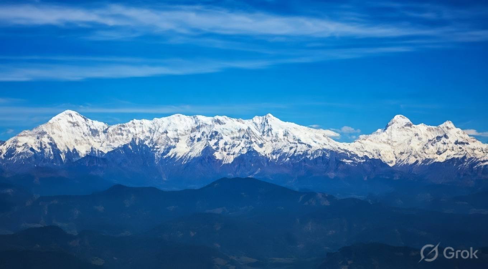
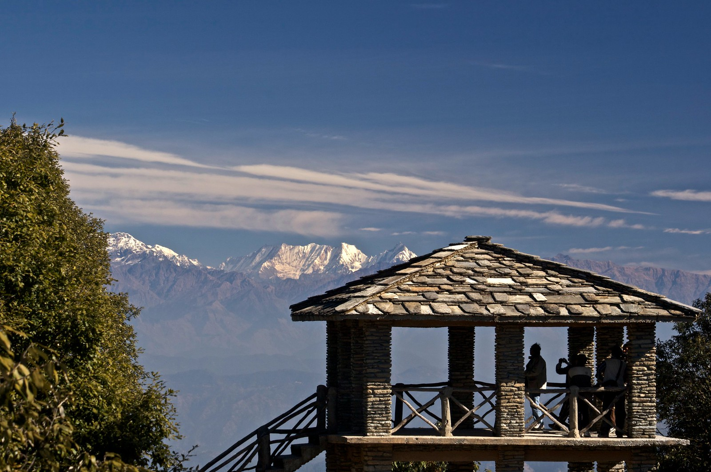
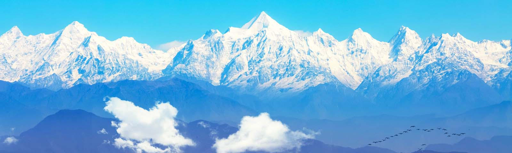
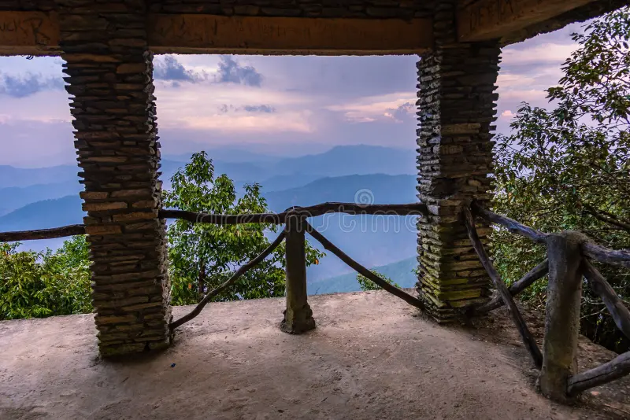
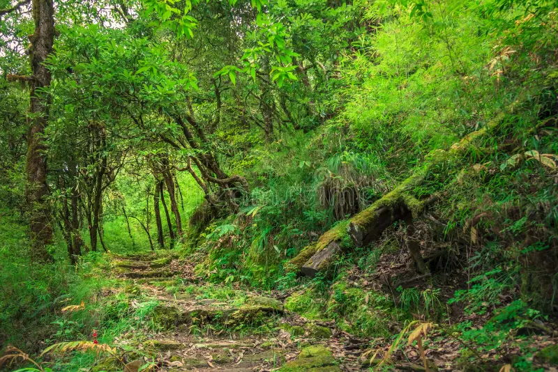
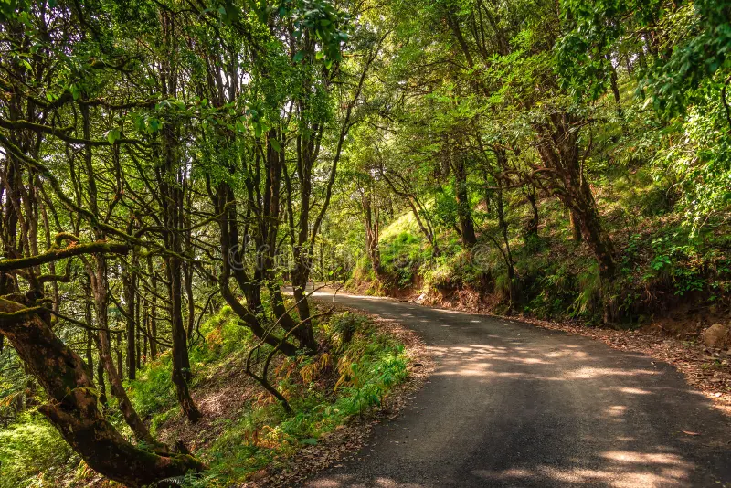

Zero Point (also known as Binsar Zero Point) is the crown jewel viewpoint inside the Binsar Wildlife Sanctuary near Almora, Uttarakhand. Perched at an elevation of around 2,900 meters (the highest point in the sanctuary, which itself sits at ~2,412 m), this iconic spot offers a breathtaking 360-degree panoramic vista of the majestic Himalayan peaks, including Nanda Devi, Trishul, Panchachuli, Kedarnath, Shivling, and more. Reachable only by a moderate 2 km trek through dense oak, rhododendron, pine, and deodar forests, Zero Point rewards every step with fresh mountain air, bird calls, possible wildlife sightings, and an overwhelming sense of being at the "end of the world" — where civilization fades and nature's grandeur takes center stage.
Part of the protected Binsar Wildlife Sanctuary (an Important Bird Area with over 200 species), Zero Point is a haven for nature lovers, photographers, trekkers, and those seeking profound peace. The sunrise here paints the snow-capped peaks in golden hues, while sunset turns the sky into a canvas of fiery oranges and purples — moments that feel almost spiritual. With benches along the trail, a small watchtower at the summit, and the quiet rustle of leaves, it's a place where time slows, worries dissolve, and the soul reconnects with the eternal Himalayas. Whether you're chasing clear mountain views after rain or simply craving solitude amid wilderness, Zero Point delivers pure, unfiltered Himalayan magic.
October to March for crisp, clear skies and sharp Himalayan views (best visibility post-winter); March–June for pleasant trekking weather and rhododendron blooms. Arrive early morning (start trek by sunrise) for the clearest peak sightings and fewer clouds; avoid heavy monsoon (July–September) due to slippery trails, leeches, and poor visibility. Weekdays or off-season offer quieter experiences.
360° Himalayan panorama from the summit watchtower, moderate 2 km forest trek through wildlife sanctuary, birdwatching (Himalayan species abound), possible sightings of barking deer, langur, or leopards, sunrise/sunset magic, peaceful benches for reflection, and photography of peaks like Nanda Devi & Trishul — ideal for nature immersion, light trekking, and soul-soothing solitude.
Wear sturdy trekking shoes with good grip, carry water, snacks, binoculars/camera, and layers (cold at summit even in summer); enter sanctuary early (gates open ~sunrise), pay entry fee at gate (~₹250/vehicle + per person), hire a local guide if needed for trails/wildlife spotting, maintain silence to enjoy birds & nature, start trek early to beat crowds & catch clear views, and respect the sanctuary — no littering or loud noise.
"At Zero Point, the world falls away and the Himalayas rise eternal — a silent throne where dawn kisses snow, wind carries ancient whispers, and every breath reminds you that true peace is found not in reaching the top, but in standing still before the infinite."